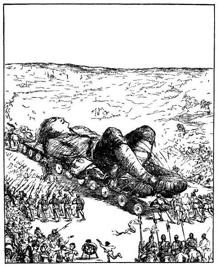
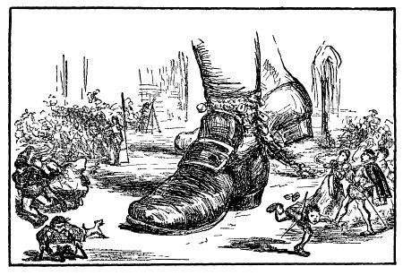

Chúng tôi lên đường được chừng bốn giờ thì bất thần một việc làm ngu ngốc đánh thức tôi dậy. Lúc ấy, chiếc xe dừng lại một lát để sửa một bộ phận bị trục trặc, ba hay bốn cậu thanh niên tò mò muốn xem tôi lúc ngủ. Các cậu leo lên xe, rón rén tiến đến mặt tôi. Một cậu - một sĩ quan cận vệ - lấy ngọn giáo thọc khá sâu vào lỗ mũi bên trái của tôi. Tôi thấy buồn buồn như có cọng rơm cù lỗ mũi, liền hắt hơi một cái. Thế là các cậu nhanh nhẹn lủi mất. Ba tuần lễ sau tôi mới biết tôi bị đánh thức dậy như thế nào. Suốt ngày hôm ấy, chúng tôi đi như vậy. Đêm đến, năm trăm người canh gác tôi, cả bên phải và bên trái, kẻ cầm đuốc, người cầm tên và nỏ, tư thế sẵn sàng nhả tên nếu tôi động đậy. Khi mặt trời mọc, chúng tôi lại đi, đến giữa trưa, thì còn cách cổng thành chừng một trăm fathom. Hoàng thượng và cả triều đình ra đón chúng tôi nhưng các vị tướng cao cấp nhất định không để cho hoàng thượng leo lên mình tôi, sợ nguy hiểm đến tính mệnh.

Nơi cỗ xe đỗ có một ngôi đền cổ, là nơi rộng nhất vương quốc. Cách đây mấy năm, ở nơi này xảy ra một vụ giết người gớm ghiếc, nên theo tôn giáo của xứ sở nơi đó bị coi là một nơi uế tạp. Bởi vậy, nó chỉ còn dùng vào việc bình thường, mọi vật trang hoàng, bàn ghế đều bị mang đi hết. Đấy, tôi phải ở nơi như thế. Cái cổng lớn quay về phương bắc, cao bốn foot, rộng gần hai foot tôi có thể bò toài vào một cách dễ dàng. Hai bên cổng có cửa sổ cao hơn mặt đất gần sáu inch. Những thợ rèn của nhà vua đã luồn qua cửa sổ bên trái chín mươi mốt cái xích to bằng dây đeo đồng hồ của phụ nữ châu Âu, người ta quấn dây xích vào cổ chân tôi rồi khóa lại bằng ba mươi sáu cái khóa. Bên kia đường cái, trước mặt ngôi đền, cách xa chừng hai mười foot, có một cái tháp cao ít nhất là năm foot. Vua thường leo lên đấy cùng với các quan đại thần để nhìn tôi - sau này người ta kể lại cho tôi biết, bởi vì tôi không thể trông thấy họ. Người ta ước tính có đến trên mười vạn dân thủ đô ra ngoại thành để xem tôi. Và mặc dù lính gác ngăn cản, tôi tính có đến một vạn người dùng thang leo lên mình tôi. Về sau, một sắc lệnh cấm mọi người làm như vậy, ai vi phạm sẽ bị xử tử. Khi những người thợ chắc chắn rằng tôi không thể dứt xiềng xích ra được, người ta mới cởi mọi dây trói. Thế là tôi ngồi dậy, lòng buồn tê tai. Thấy tôi ngồi dậy, mọi người tỏ vẻ sửng sốt và ngạc nhiên không sao tả được. Xích quấn chân trái tôi dài khoảng sáu foot, khiến tôi không những đi lại được một nửa vòng tròn, mà còn có thể bò toài được vào ngôi đền và nằm dài trong đó.